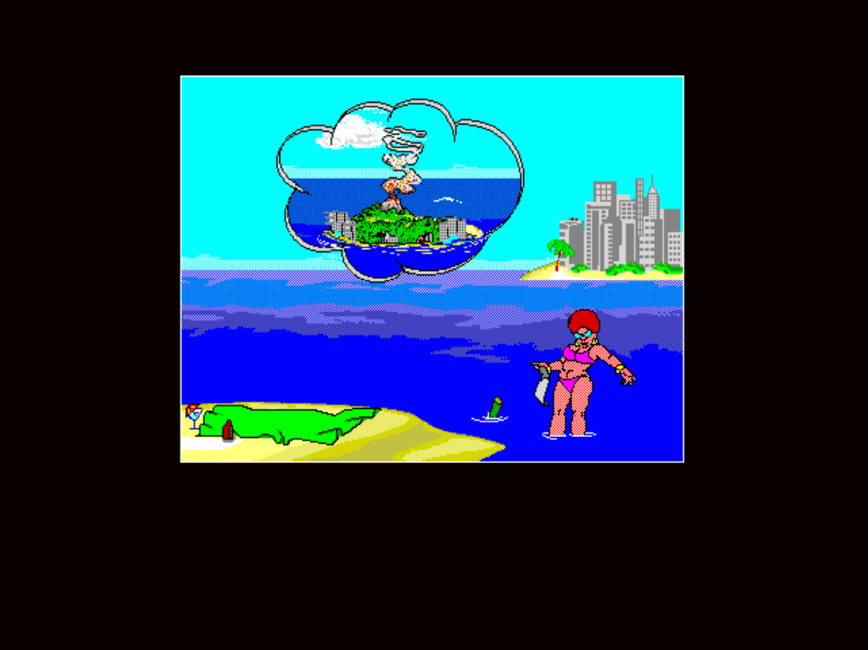

Scene · SUZY 1 validated
SUZY 1 — Suzy finds a letter from Johnny

SUZBEACH.SCR backdrop, city skyline, palm-island
cutaway in the corner — with a thought bubble of Johnny's
island as she reads his letter. SUZY 1 is the inbound
counterpart to
JOHNNY 3's
outbound "writes a letter to Suzy" beat. Engineering note: not
an island/ocean scene — the FG2 runtime now loads
SUZBEACH.SCR as the clean backdrop for SUZY scenes
instead of painting the standard island and water behind them.
Both SUZY rows are metadata-only on
/perf/ on purpose
(no deterministic scene-end so they're excluded from
target-speed averages — visual signoff still holds).
Validated on 2026-05-04 under the FISHING 1 bar.
SUZY 1 is not an island/ocean scene. The PS1 runtime now loads the
source SUZBEACH.SCR screen as the clean backdrop for SUZY scenes,
then replays the foreground pack over that beach background.
Pack identifiers
- ADS dispatch:
SUZY.ADS scene 1 - Slug:
suzy1
What this scene is
Suzy, back home, finds a letter that Johnny sent her from the island — the inbound side of the JOHNNY 3 letter-to-Suzy gag. Confirmed by direct on-PS1 playback observation while capturing the chapter-select thumbnail; the earlier “sunbathing daydream” caption-mapping guess was wrong.
Validation notes
High and low packs were regenerated with the current foreground exporter.
The blocking defect was backdrop classification: the scene was correctly
captured, but runtime playback still painted the normal island and water
behind it. SUZBEACH.SCR is now included on disc and selected by the
FG2 runtime for SUZY scenes.
Notable runtime history
SUZY 1 high and low both appear on the
performance battle card as measured rows.
They need a longer 12000-frame matrix budget because the valid scene-end
lands after the default 7200-frame timing window. The current rows are close
to target at 5763/5738 VBlanks for both tides.
v0.8.7-ps1 hardened the cleanup path for Suzy’s home-beach backdrop:
scene-specific state now clears clean-bg black mode and frees clean-bg
rect state on entry and cleanup, so the following island-side scene
doesn’t lose its palm or tree background layers after a SUZY play.
Before the fix, long random runs could leave residue from the
black-backdrop frames bleeding into the next scene’s
dirty-rect bookkeeping.